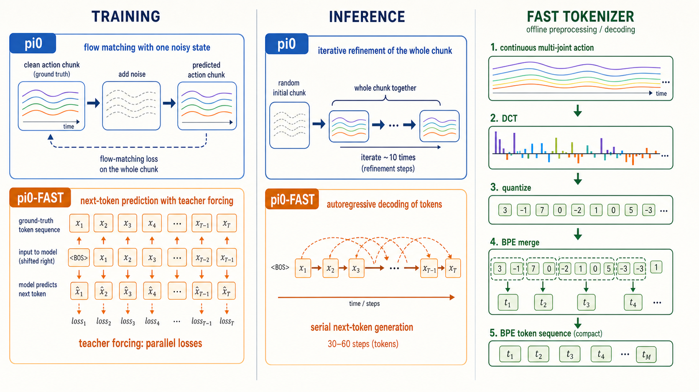

为什么 π0-FAST 训练快很多，推理却慢很多？
它把连续动作改写成语言模型擅长的离散 token：训练时答案已知，可以并行批改；推理时答案未知，只能逐 token 续写。
先说结论
白话：训练像老师拿标准答案一次批完整张卷子；推理像学生考试，必须写完第一个字才能决定第二个字。π0 则把整段动作当成黏土，每轮同时调整整块。
指达到相近表现所需总计算，不等于单步固定快 5 倍。
论文中生成 1 秒动作块的示例。
纠正：π0 推理约 10 次 refinement，但训练通常随机采一个噪声时刻、一次前向算损失，并非训练也去噪 10 次。
两种模型
π0：连续 flow
它从噪声出发，把整块连续动作逐步推成合理轨迹。动作生成使用约 300M 参数 action expert，部署常用约 10 个 Euler 步。
π0-FAST：动作句子
FAST 把轨迹压成 [T127,T98,T203,...]，约 2B 参数 VLM 像续写句子一样预测。
为什么训练更快
Teacher forcing 可并行
正确序列若是 起点→A→B→C→D，训练时答案全已知。右移真值配合 causal mask，一次前向可同时计算所有位置的损失，不必先生成 A 再生成 B。
复用 VLM 熟悉的题型
VLM 本就擅长预测下一个 token。把动作翻译成 token，相当于把新问题改写成预训练模型练熟的题型。
序列更短
DCT+BPE 利用轨迹平滑和重复模式，把典型动作块压到约 30–60 token。论文的最高约 5× 指达到强表现所需 GPU 小时，不等于单 step 固定快 5 倍。
为什么推理更慢
部署没有标准答案，必须先生成 A，再把 A 接回上下文生成 B。KV cache 能省旧 token 的重复计算，却消除不了串行依赖。
π0
约 10 次 refinement；每次整块动作一起更新；主要经过约 300M action expert。
π0-FAST
约 30–60 token；逐个串行；每步经过约 2B 完整模型。
粗略比较：π0 是 10 次左右的小动作专家；π0-FAST 是 30 到 60 次的大模型串行调用，因此 100 ms 对 750 ms 并不矛盾。
为什么要动作专用 BPE
先纠正：原始 FAST 可为具体数据训练 BPE；FAST+ 用多机器人数据训练通用 tokenizer，新数据不必每次重训。需要的是从动作统计规律学出的词表，而不是普通文本词表。
DCT 与量化
DCT 把平滑轨迹变成频率系数。高频大量接近 0，所以重复模式很多。量化再把小数变成 0,0,1,0,-1，让动作进入离散 token 世界。
BPE 白话例子
若常见序列是 0,0,1,0,0,0,1,0，可先把 0,0 合并为 A，再把常见组合合并为 B，最后 8 个符号可能压成 B,B。BPE 就是在给常见动作短语起缩写。
| 为何不用文本 BPE | 后果 |
|---|---|
| 文本常见词根、汉字和标点；动作常见量化 DCT 整数组合 | 压缩率低，序列更长 |
| 关节与频率有独特重复结构 | 普通语料学不到动作短语 |
π0-FAST 使用约 1024 个动作 token。词表太小则序列长，太大则 token 稀疏。FAST+ 使用约 100 万条、来自 7 个机器人数据集的轨迹训练通用词表。
ImageGen 图解

误区与取舍
- FAST 不等于推理也快，它强调 tokenization 与训练效率。
- π0 训练不是每样本跑 10 次，10 次主要是部署采样。
- BPE 首先是压缩器，语义来自策略模型。
- 词表不是越大越好，需要平衡长度、稀疏性和泛化。
最终判断：π0-FAST 用推理延迟换训练效率与统一的 next-token 架构；大规模训练很有吸引力，极低延迟闭环控制则 π0 更占优势。
一层 Paired Gemma Block：面向新手的逐行源码教学
学习目标：读完本节，你应该能从一个 batch 的图像、文字、状态和 noisy action 出发，手工说出每个张量的形状；理解两条流为什么宽度不同却能做同一次 Attention；理解 adaRMSNorm 的 scale、shift、gate 分别作用在哪里；并能区分训练的一次联合前向与推理的 Prefix KV Cache 路径。
0. 先记住 8 个符号
| 符号 | 含义 | 典型形状 |
|---|---|---|
B | batch size | 例如 32 |
P | Prefix token 总数：所有图像 patch token + prompt token | 3×256+最多200 |
H | 动作块长度 action horizon | 默认50；DROID 15；LIBERO 10 |
A | 补零后的动作维度 | openpi 默认32 |
D_p | Gemma 2B Prefix hidden width | 2048 |
D_a | Action Expert hidden width | 1024 |
N_q/N_{kv} | Query heads / KV heads | 8 / 1 |
D_h | 每个 attention head 的维度 | 256 |
核心技巧：2048 和 1024 只是两条流内部 hidden 的宽度。进入 Attention 前，两条流都会被各自的投影矩阵变成同样的 head 形状：Q 是 8×256，K/V 是 1×256。因此它们可以在 token 维拼接。
1. Pi0.__init__：模型为什么天然就是“两条流”
paligemma_config = get_config("gemma_2b")
action_expert_config = get_config("gemma_300m")
llm = Gemma.Module(
configs=[paligemma_config, action_expert_config],
embed_dtype="bfloat16",
adarms=True,
)
llm.init(use_adarms=[False, True])configs=[...]不是把两个完整 Transformer 串联，而是告诉一个Gemma.Module：每层同时维护两个 expert state。- 索引0是 Prefix/PaliGemma：18层、width 2048、MLP 16384。
- 索引1是 Action Expert：同样18层、width 1024、MLP 4096。
- 两者层数必须相同，因为
nn.scan每次同时推进两条流的一层。 use_adarms=[False,True]表示 Prefix 使用普通 RMSNorm，Action 流使用带时间条件的 adaRMSNorm。- 参数名通过后缀隔离：例如 Prefix 是
q_einsum，Action 是q_einsum_1。所以共享执行框架，不共享投影权重。
2. 进入 Block 前：Prefix 与 Action token 怎样得到
# Prefix
image_tokens = SigLIP(image) # [B,256,1152] / camera
image_tokens = vision_proj(image_tokens)# [B,256,2048]
text_tokens = gemma_embed(prompt_ids) # [B,L,2048]
prefix = concat(images, text, axis=1) # [B,P,2048]
# Action suffix
x_t = t * noise + (1-t) * actions # [B,H,A]
action_tokens = action_in_proj(x_t) # [B,H,1024]
c_t = time_mlp(sincos(t)) # [B,1024]- 每张224×224图片由 patch14 的 SigLIP 切成16×16=256个 token。
- 多个相机不是在通道维拼图，而是分别编码，然后在 token 维依次排在 Prefix 中。
- 文字由唯一的 PaliGemma vocabulary embedder 变成2048维；Action Expert 没有自己的离散词表 embedder。
- π0.5 默认把归一化 state 分成256个区间，并写进 prompt 字符串；因此 state 最终也属于 Prefix 文本 token。
- 动作没有离散化。整段连续动作先加噪，再逐时间点线性投影到1024维。
- 时间步不和 action token 拼接，而是单独变成条件向量
c_t，供每层 adaRMSNorm 使用。
3. adaRMSNorm：逐行解释每一步
dtype = x.dtype
var = mean(square(x.astype(float32)), axis=-1, keepdims=True)
r = x * reciprocal(sqrt(var + 1e-6))
if cond is None:
scale = ParameterZeros([D])
return r * (1 + scale), None
modulation = Dense(3 * D, kernel_init=zeros)(cond)
scale, shift, gate = split(modulation[:, None, :], 3, axis=-1)
y = r * (1 + scale) + shift
return y, gate模型主体通常是 bfloat16，但平方和平均容易有数值误差，因此后面临时转 float32；最终再转回原 dtype。
RMSNorm 与 LayerNorm 的区别是它不计算 x-mean(x)，只用均方根衡量向量整体幅度。每个 token 独立在最后一个 hidden 维上计算。
r=x/sqrt(mean(x²)+ε)。此时每个 token 的 RMS 约为1，但方向信息仍保留。
Prefix 使用普通 RMSNorm。可学习参数初始为0，并以 1+scale 使用，所以初始化时不会把特征乘成0。
Action 流把同一个时间向量 c_t[B,D] 映射成3D个数。Dense 的 kernel 使用全零初始化，因此刚开始 scale、shift、gate 都是0。
[:,None,:]增加 token 轴，形状由 [B,3D] 变成 [B,1,3D]。同一个时间条件会广播到动作块的全部 H 个 token；每个动作时刻共享当前 diffusion/flow 时间。
决定每个 hidden channel 放大或缩小多少：r*(1+scale)。它让网络在高噪声阶段和低噪声阶段强调不同特征。
给每个 hidden channel 增加时间相关偏置。即使归一化后的方向相同，不同时间步也能移动到不同特征区域。
gate 不直接修改归一化输入，而是稍后控制整个 Attention 或 FFN 分支写回残差流的强度。
为什么全零初始化很重要？初始化时 gate=0，所以 Action Block 的 Attention/FFN 分支暂时不改变残差主干，整层接近恒等映射，训练更稳定。最先学起来的是生成 gate 的调制层；gate 打开后，Attention 与 FFN 参数才逐渐获得更强梯度。这与 adaLN-Zero 的稳定化思想相似，但这里使用 RMSNorm。
4. Block 前半段：Pre-Attention Norm
pre_attn = []
gates = []
for i, x in enumerate(xs):
if x is not None:
x, gate = RMSNorm(...)(x, adarms_cond[i])
pre_attn.append(x)
gates.append(gate)
post_attn, kv_cache = Attention(configs)(
pre_attn, positions, attn_mask, kv_cache
)xs是长度2的列表：[x_prefix, x_action]。推理 Prefix-only 时可能是[x_prefix,None]；Euler step 时是[None,x_action]。- 循环不是共享 RMSNorm。
_name(...,i)为两条流创建不同参数。 - Prefix 的
adarms_cond[0]=None，返回gate=None。 - Action 的
adarms_cond[1]=c_t，返回形状[B,1,1024]的 gate。 - 归一化后的两个张量一起交给同一个 Attention 对象。
5. Attention：两流从独立投影到统一注意力
[B,P,2048]×Wq_p → [B,P,8,256]Action：
[B,H,1024]×Wq_a → [B,H,8,256]Kp,Vp=[B,P,1,256]Action：
Ka,Va=[B,H,1,256]Q=[B,P+H,8,256]K,V=[B,P+H,1,256]1/sqrt(256) 防止点积过大。Q → [B,T,K=1,G=8,256]。1个KV组对应8个Query heads。einsum → [B,1,8,T,S]；T是query token数，S是key token数。E[B,T,8,256]，此时仍是一条拼接后的 token 序列。E[:,:P] 给 Prefix，E[:,P:P+H] 给 Action。8×256→2048Action：
8×256→10246. GQA：为什么1个 KV head 可以服务8个 Query heads
普通多头注意力可能为8个 Query heads 各准备一套 K/V；这里 num_kv_heads=1，所有8个 Query heads 共享同一套 K/V。代码把8个 Query heads 看成同一个 KV group 内的8个成员：
每个 Query head 仍有自己的问题角度，但都去查询同一本“上下文索引”。好处是 Prefix KV cache 缩小到原来的约1/8，Euler 推理反复读取缓存时更省显存和带宽。
7. Attention 输出怎样拆开、写回残差
start = 0
for i, (x, config) in enumerate(zip(xs, configs)):
end = start + x.shape[1]
y_i = out_proj_i(encoded[:, start:end])
outputs.append(y_i)
start = end
xs = [gated_residual(x, y, gate) ...]
def gated_residual(x, y, gate):
if gate is None:
return x + y
return x + y * gate- 代码没有根据 hidden width 拆分，而是根据每条流原来的 token 数 拆分。
- 训练时顺序固定为 Prefix tokens 在前、Action tokens 在后，所以用游标
start/end切片。 - 切片后的 encoded 仍是8个256维 heads；每条流再用自己的输出矩阵还原到2048或1024。
- Prefix
gate=None，使用普通x+y。 - Action 使用
x+gate*y，gate 在 token 轴广播，因此同一 batch 样本的H个动作位置共享该层的时间门控向量。
8. Block 后半段：Pre-FFN Norm 与 GeGLU
for i, (x, config) in enumerate(zip(xs, configs)):
x_norm, gate = RMSNorm(pre_ffw_norm_i)(x, adarms_cond[i])
y = FeedForward(
features=config.width,
hidden_dim=config.mlp_dim,
)(x_norm)
x = gated_residual(x, y, gate)- Attention 写回后，每条流再次单独归一化。Action 会再次使用
c_t，但这里是另一套 Dense 参数，所以 Attention gate 与 FFN gate 可以不同。 - FeedForward 使用两路上投影：一路经过 GELU 作为门，另一路提供内容；两者逐元素相乘，再下投影回原宽度，属于 GeGLU 风格。
- Prefix FFN：2048→16384→2048；Action FFN：1024→4096→1024。
- 完成第二次残差后，这一层结束；输出作为下一层的
xs。 nn.scan(length=18)把同样控制逻辑执行18次，但每层参数独立。
9. 训练时：一层看到哪些信息
compute_loss() 虽然算出 prefix_out，但只使用 action suffix 输出预测速度场并计算Flow MSE。10. 推理时：为什么 Prefix 可以提前算
# 只运行 Prefix
_, kv_cache = llm([prefix_tokens, None], ...)
# 每个 Euler step 只运行 Action
(prefix_out, suffix_out), _ = llm(
[None, suffix_tokens],
kv_cache=kv_cache,
adarms_cond=[None, c_t],
)
- Prefix 在一次动作块生成期间不变，因此18层 Gemma 2B 不需要每个Euler step重复运行。
- 第一次 Prefix pass 在每层保存经过该层 Prefix K/V 投影后的张量；K、V 各约
[18,B,P,1,256]。 - 这些缓存已经融合了图像 token、任务 prompt，以及实际放进 prompt 的任何文本内容。
- 每个Euler step只为当前 noisy action 生成 Action Q/K/V，再执行
K=concat(cache_Kp,Ka)和V=concat(cache_Vp,Va)。 - 此时没有 Prefix query，因此也不需要产生 prefix_out；Attention 输出只切出H个Action位置。
- 时间从1降到0，每一步的
c_t不同，所以即使 Prefix KV 不变，Action Expert 的 adaRMSNorm 工作模式也在变化。
11. Prefix Cache 是否包含 subtask 和自回归离散 token
公开 openpi 的准确答案：KV cache 包含“实际传给 tokenized_prompt 的 token”，而不是模型在 sample_actions() 内部生成的新 token。默认可包含任务文字和离散 state；如果调用者事先把 subtask 拼进 prompt，也会包含 subtask。当前开源 π0.5 动作推理路径没有文本 logits、没有 token decode、没有 autoregressive subtask generation，因此不会在生成动作前自己续写一串离散 token。
12. 一层 Block 的最终伪代码
def paired_block(x_prefix, x_action, c_t, mask, cache=None):
# A. 各自归一化
p_norm, _ = rmsnorm_prefix(x_prefix, cond=None)
a_norm, g_attn = adarmsnorm_action(x_action, cond=c_t)
# B. 各自投影，但在同一个 Attention 中拼接
Qp,Kp,Vp = project_prefix(p_norm)
Qa,Ka,Va = project_action(a_norm)
if cache is None: # 训练
Q = cat_token(Qp, Qa)
K = cat_token(Kp, Ka)
V = cat_token(Vp, Va)
else: # 推理 Euler step
Q = Qa
K = cat_token(cache.Kp, Ka)
V = cat_token(cache.Vp, Va)
E = grouped_query_attention(Q, K, V, mask)
# C. 训练时按 P/H 拆分；推理时只有 Action 部分
Ep, Ea = split_by_original_token_lengths(E)
x_prefix = x_prefix + prefix_out_proj(Ep)
x_action = x_action + g_attn * action_out_proj(Ea)
# D. 两套独立 FFN
p_ffn, _ = rmsnorm_prefix_ffn(x_prefix, None)
a_ffn, g_ffn = adarmsnorm_action_ffn(x_action, c_t)
x_prefix += prefix_ffn(p_ffn)
x_action += g_ffn * action_ffn(a_ffn)
return x_prefix, x_actionPaired Gemma Transformer Layers：源码级完整拆解
最重要的结论：“双流共享同一个 Transformer”不是两条流共用同一套权重。它们共享的是 18 层同步执行框架、同一个 Attention 计算图、同一张 attention mask 和同一套 token 位置轴；PaliGemma 与 Action Expert 的 RMSNorm、Q/K/V 投影、输出投影和 FFN 参数均相互独立。
图像 tokens + prompt tokens
Qp: [B,P,8,256]
Kp,Vp: [B,P,1,256]
参数属于 Gemma 2B
Q=cat(Qp,Qa)
K=cat(Kp,Ka)
V=cat(Vp,Va)
RoPE → Q/√256
GQA logits → mask → softmax → V
统一输出 E[B,P+H,8,256]
[8,256] → width 2048
普通残差：xp←xp+yp
xp←xp+FFNp
noisy action tokens
Ka,Va: [B,H,1,256]
参数属于 311M Expert
[8,256] → width 1024
门控残差：xa←xa+gateattn⊙ya
xa←xa+gateffn⊙FFNa
adaRMSNorm 到底做了什么
Dense 使用全零初始化，所以训练开始时 s=b=g=0：归一化分支最初等价于普通 RMS 输入，但残差分支被 gate 关掉。模型再逐步学会“在不同噪声阶段打开多少 Attention/FFN、如何缩放和平移特征”。每层的 Attention Norm 和 FFN Norm 都有各自独立的调制 Dense。
GQA 为什么能连接不同宽度的流
两流宽度不同：2048 与 1024；但代码强制它们具有相同的 num_heads=8、num_kv_heads=1 和 head_dim=256。各流先用自己的权重投影到相同“注意力语言”，所以才能沿 token 维拼接。
代码把 Q 重排为 [B,T,K=1,G=8,256]。一个 K/V head 被 8 个 Query heads 共享，logits 为 [B,1,8,T,S]；这就是 Grouped-Query Attention 在 K=1 时的 Multi-Query 特例。
训练：两条流同一次前向
Action:。[prefix_tokens, suffix_tokens]。compute_loss() 只取 suffix 最后 H 个 hidden → action_out_proj → Flow MSE；公开代码没有文本 CE。推理：Prefix 先算一次，Action Expert 重复读取 KV cache
llm([prefix_tokens, None])18 层逐层得到 Kp,Vp
缓存总体形状近似：
[18,B,P,1,256]（K 与 V 各一份）llm([None,suffix_tokens], kv_cache=prefix_cache)只计算 Action 的 Qa/Ka/Va
K=cat(cache Kp, Ka)，V 同理；Q 只有 Qa
输出也只有 Action stream
x←x−vt/N，直到 t:1→0
Prefix 是否包含 subtask 和自回归离散 token？
| 问题 | 以公开 openpi 代码为准的答案 |
|---|---|
| Prefix 固定包含什么？ | 所有有效相机的 SigLIP tokens，以及 tokenized_prompt。默认 π0.5 tokenizer 会把任务字符串和量化 state 写入 prompt。 |
| 会自动生成 subtask 吗？ | 不会。Pi0.sample_actions() 没有调用词表 decode、文本 logits 或 autoregressive loop；它只输出连续动作。 |
| 可以让 Prefix 包含 subtask 吗？ | 可以，但要由数据集、调用者或外部高层模型把 subtask 拼进 prompt。一旦进入 prompt，它会像其他文本 token 一样被编码并写入每层 Prefix KV cache。 |
| 论文里的高层自回归 token 在哪？ | 论文描述了高层语义预测，但对应联合训练和文本生成路径没有包含在当前公开 Pi0.compute_loss()/sample_actions() 中，不能把论文能力直接等同于开源推理实现。 |
精确理解“共享”：Paired Block 类和 Attention kernel 是共享的；层数、RoPE 位置、mask 与注意力矩阵也是统一的。但参数名通过后缀区分，例如 Prefix 使用 q_einsum，Action Expert 使用 q_einsum_1，所以它们不是权重共享。
π0.5 后训练完整链路：以 openpi 开源代码为准
范围说明：下图描述公开仓库中可以真实执行的 scripts/train.py π0.5 微调链路。论文中的“高层 subtask、bbox、网页 VLM 数据与动作数据联合训练”没有出现在当前开源 train.py → Pi0.compute_loss() 路径中；开源损失只有连续动作 Flow-Matching MSE。
① TrainConfig 与原始样本
config.py::TrainConfig
pi05_aloha：H=50，A=32pi05_droid：H=15，A=32pi05_libero：H=10，A=32，batch=256，30k stepsCheckpointWeightLoader(pi05_base/params)；模型结构由 Pi0Config(pi05=True) 创建AlohaInputs / DroidInputs / LiberoInputs：重命名相机与 state/action 字段，必要时转换动作坐标或 delta actionbase_0_rgb、left_wrist_0_rgb、right_wrist_0_rgb。缺失相机由占位图和 image mask 表示。② data_loader.py 的变换顺序
transform_dataset()
images/state/actions/promptuse_quantile_norm=True 时使用 q01/q99 映射到 [−1,1]InjectDefaultPrompt → ResizeImages(224,224) → TokenizePrompt → PadStatesAndActions(A=32)discrete_state_input=True：state 在 [−1,1] 上分成 256 bins，写成Task: ... State: 12 84 ...;\nAction:最大非图像长度 200
pi05_libero 显式设置 discrete_state_input=False，因此 prompt 中不包含离散 state。Observation.from_dict(batch) 和 actions[B,H,A]，再放到 JAX sharding / PyTorch device③ Pi0.compute_loss()：一次前向的完整网络
models/gemma.py · models/siglip.py
patch14：256 tokens/图；width1152 · depth27 · MLP4304 · 16 heads
视觉投影到 2048；与 prompt embedding 拼接为 P[B,Sp,2048]
xτ=τε+(1−τ)a，目标 uτ=ε−a
action_in_proj：A→1024，得到 X[B,H,1024]RMSNorm → GQA → residual → RMSNorm → GeGLU FFN → residual
adaRMSNorm(cτ) → GQA → gated residual → adaRMSNorm(cτ) → GeGLU FFN → gated residual
action_out_proj 1024→A → vθ[B,H,A]④ Loss、梯度、优化器和 checkpoint
mean((v_t-u_t)^2, axis=-1)先对 action dim 求均值，返回
chunked_loss[B,H]loss = mean(chunked_loss)再对 batch 与 horizon 求均值
trainable_filter = Param − freeze_filter 求梯度；默认 full fine-tuning，LoRA 配置可冻结主参数apply_updatesema_params；按 save_interval 写入 params、optimizer state、norm stats 与 metadataObservationembed_prefix() → prefix attention → 建立 KV cachex←x−vt/10
actions[H,A]一句话总结代码链路：数据集样本先被统一字段、归一化、图像缩放、prompt/state token 化和动作补零；PaliGemma 编码视觉语言前缀，311M Action Expert 在该前缀条件下预测整段 noisy action 的速度场；Flow MSE 反传更新参数；部署时前缀只算一次并缓存，Action Expert 用约 10 个 Euler 步把噪声积分成连续动作块。
π0.5 的完整网络结构
一句话：π0.5 不是把 π0 换成另一套大模型，而是在同一套“PaliGemma 视觉语言主干 + 轻量动作专家 + flow matching”骨架上，做了两处关键改造：把机器人状态离散化后放入语言前缀，并用 adaRMSNorm 把扩散时间注入动作专家。
1. 输入与前缀序列
输入由多路 RGB 图像、任务文字、机器人本体状态和可选的高层子任务组成。官方实现预留 3 路 224×224 图像槽位；每张图由共享的 SigLIP So400m/14 编码器切成 14×14 patch，因此每路得到 256 个视觉 token。文字和离散状态最多使用 200 个非图像 token。
π0.5 不再像 π0 那样把连续状态投影成动作后缀里的一个 token，而是先把每个状态维度量化到 256 个区间，再写进语言提示。例如关节状态 [0.12,-0.70] 会变成类似 state: 143 38 的离散 token。这样视觉、任务、状态和高层语义都进入同一个前缀。
2. PaliGemma 视觉语言主干
| 模块 | 官方配置 | 作用 |
|---|---|---|
| 视觉编码器 | SigLIP So400m/14，宽度 1152，27 层，16 头 | 把每张 224×224 图像变成 256 个视觉 token，再投影到语言宽度 |
| 语言主干 | Gemma 2B，宽度 2048，18 层，MLP 16384，8 个 Query 头、1 个 KV 头，head dim 256 | 融合图像、任务、状态与子任务语义，提供上下文 K/V |
| 注意力 | 前缀内部双向全注意力 | 所有图像和文字 token 可以互相理解 |
论文与代码的小差异：论文附录把 PaliGemma 写成“18 heads”，但 Gemma 2B 的发布配置和 openpi 源码都是“18 层、8 个 Query 头、1 个 KV 头”。复现时应以官方代码配置为准。
3. 动作专家
动作专家是约 311M 参数的 Gemma 小模型，和 2B 主干按层并行排列：两边都有 18 层。它的宽度是 1024，MLP 4096，8 个 Query 头、1 个 KV 头，head dim 256。每个噪声动作向量先通过线性层从动作维度投影到 1024 维，形成长度为 H 的动作 token 序列。
动作 token 可以读取全部视觉语言前缀；反过来，前缀不能读取动作 token。动作块内部使用同一 attention block，因而一轮可以同时更新整段动作，而不是逐动作 token 自回归生成。
4. π0.5 特有的时间注入
时间标量 t 先做正弦余弦编码，再经过两层 1024→1024 的 MLP。得到的条件向量不与每个动作 token 拼接，而是送入动作专家每层的 adaRMSNorm，动态产生 scale、shift 和 gate。白话说：同一个动作专家在“全是噪声”和“快去噪完成”两个阶段会自动换一套工作模式。
5. 输出头与 flow matching
动作专家最后的 H 个隐藏向量经 1024→动作维度的线性层，预测速度场 vθ。训练时随机采一个 t，只做一次大前向，目标速度是 ε−A；推理时从高斯噪声出发，官方默认做 10 个 Euler 步，逐步积分回连续动作块。
6. 三类训练样本如何共用一张网络
机器人动作样本
图像 + 任务 + 状态 → 连续动作块，训练 flow loss。
高层语义样本
图像 + 任务 → 子任务文字，训练 next-token loss，不启用动作专家。
网页与 VLM 样本
图文问答、物体定位等，继续训练 PaliGemma，维持开放世界语义能力。
后训练
主要使用目标机器人数据和语义数据，网页/VLM 数据在该阶段移除。
7. 从输入到动作的完整数据流
多路图像 → SigLIP patch tokens → 投影到 2048 维任务文字 + 离散状态 + 可选子任务 → Gemma token embedding全部前缀 → 18 层 PaliGemma，建立语义上下文/KV cache噪声动作块 → 线性投影到 1024 维时间 t → SinCos + MLP → 每层 adaRMSNorm18 层动作专家读取前缀并并行处理整段动作输出线性层 → 速度场 → 约 10 步 Euler 积分 → 连续动作块
参数量如何理解：约 3.3B 是“SigLIP + Gemma 2B + 311M 动作专家 + 投影层”的总量。推理时视觉语言前缀可先算一次并缓存 K/V；每个 flow 步主要重跑动作专家后缀。
结构依据：π0.5 论文附录 E/F 与 Physical Intelligence 官方 openpi 实现。openpi 默认接口是动作维度 32、动作块长度 50；具体机器人会按 embodiment 裁剪或改写有效动作维度和 horizon。
来源
5 倍与 750/100 ms 是论文报告值；实际速度随硬件、编译、KV cache、动作维度和控制频率变化。